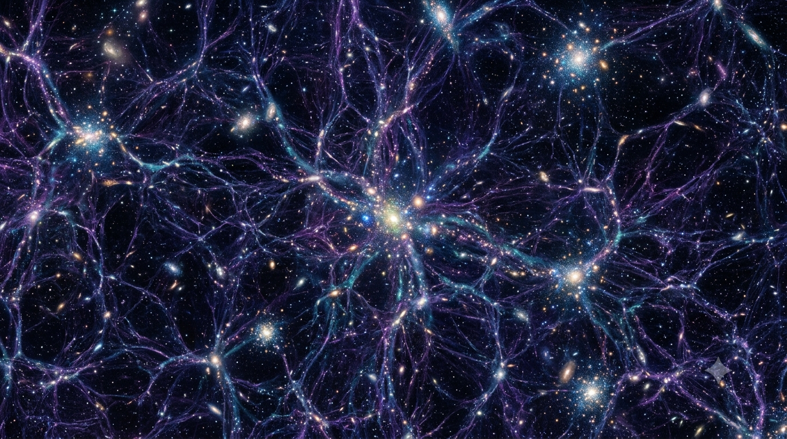

ASTRONOMYAstronomy
Explore galaxies, stars, nebulae, and the fascinating universe beyond our Solar System.
Explore →Discover fascinating worlds beyond our Solar System, explore Earth-like planets, habitable zones, and the search for extraterrestrial life.
← Back to HomeDiscover Earth-like planets, habitable worlds, James Webb Space Telescope discoveries, and the ongoing search for life beyond Earth.
Explore fascinating worlds beyond our Solar System and the search for life across the universe.
Discover rocky planets that resemble Earth and may contain liquid water.
Read More →Learn why scientists search for planets orbiting within the Goldilocks Zone.
Read More →Explore the transit method, radial velocity technique, direct imaging, and modern planet-hunting methods.
Read More →Discover planets larger than Earth but smaller than Neptune, and learn what makes them unique.
Read More →Learn how the James Webb Space Telescope analyzes distant planetary atmospheres.
Read More →Explore how scientists search for biosignatures and possible extraterrestrial life on distant worlds.
Read More →